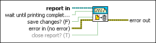

Dispose Report VI
Owning Palette: Report Generation VIs
Requires: Base Development System
Closes the report and releases its interface, which saves memory.
After the VI runs, you cannot perform further operations on the report. The Dispose Report VI should be the last VI you use when you create a report.

 Add to the block diagram Add to the block diagram |
 Find on the palette Find on the palette |